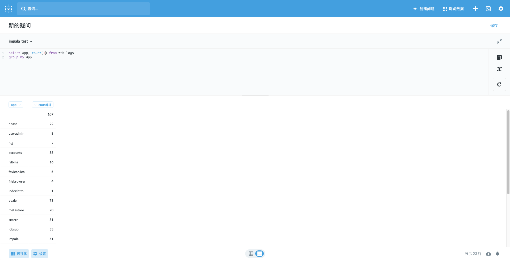

更新日志
背景
我们的数据仓库是 Hadoop/Hive 体系的。Hadoop 版本采用的是 CDH 发行版。在这个背景下 SQL on Hadoop 的方案有 Hive/Impala/(SparkSQL)。作为 BI 数据库，Impala 在我们的场景下比较合适。
- Hive：太慢了。做 ETL 可以，BI 非常不适。
- SparkSQL：CDH 官方 Spark 不含 Thrift Server。为了能够使用 Metabase ，独立于 CDH 启了个 Thrift Server，用着还不错。问题就在于缺乏统一管理，比如 Kerberos 的管理就得自己写脚本处理、进程 OOM 挂掉了 CDH Manager 也监测不到。
- Impala：CDH 官方出品，为 BI 而设计，由 CDH Manager 管理。根据这份报告，见下参考链接，Impala 好于 SparkSQL。
出于尽可能复用已有基础设施的目的，选择 Impala。而 Metabase 官方、社区并不提供 Impala 驱动。本文就是为了探索并解决这个问题。
参考：
- 开源OLAP引擎测评报告(SparkSql、Presto、Impala、HAWQ、ClickHouse、GreenPlum) http://www.clickhouse.com.cn/topic/5c453371389ad55f127768ea
现有驱动探索
搭建 Impala 开发环境
使用 Cloudera Quickstart Docker 镜像（官方已经下架 quickstart vm ）。其中，Impala版本 2.5.0。（我们的生产环境：CDH 6.3.2 Impala 3.2.0 Hive 2.1.1）
docker run --name cloudera_quickstart --hostname=quickstart.cloudera \
--privileged=true -t -i -d -p 8888:8888 -p 80:80 -p 10000:10000 -p 7180:7180 \
-p 21050:21050 -p 50070:50070 -p 50075:50075 -p 50010:50010 -p 50020:50020 \
-p 8020:8020 cloudera/quickstart /usr/bin/docker-quickstart
一些端口使用的说明：
| Port | Use |
|---|---|
| 80 | Tutorial |
| 8888 | HUE |
| 21050 | Impala |
| 10000 | Hive |
注意：关闭再启动容器，Impala进程并没有重启。重启 Impala 最直接的方法就是重建容器。
参考：
- quickstart docker image https://hub.docker.com/r/cloudera/quickstart
- 15分钟——在Docker启动Cloudera并开始体验 https://xieshaohu.wordpress.com/2019/02/26/15%E5%88%86%E9%92%9F-%E5%9C%A8docker%E5%90%AF%E5%8A%A8cloudera%E5%B9%B6%E5%BC%80%E5%A7%8B%E4%BD%93%E9%AA%8C/
尝试 mwullink/metabase
在 metabase issue 里看到一个关掉的关于Impala的PR，这方面的资料真的很少。如下：
- Support Apache Impala database #3002 #3749 https://github.com/metabase/metabase/pull/3749
- Support Apache Impala database #3002 https://github.com/metabase/metabase/issues/3002
可惜，并没有被合并到官方库。尝试编译作者mwullink的metabase版本。 https://github.com/mwullink/metabase
git clone https://github.com/mwullink/metabase.git metabase-mwullink
这个metabase版本太老了，前端依赖还是node 4.4.7（warning You are using Node “4.4.7” which is not supported and may encounter bugs or unexpected behavior. Yarn supports the following semver range: “^4.8.0 || ^5.7.0 || ^6.2.2 || >=8.0.0”），另外yarn对node4.x也有兼容问题（ https://github.com/yarnpkg/yarn/issues/6900 ）。
特殊处理逻辑：
# nvm 安装 node 4.x 版本
nvm install lts/argon
# 修改 node 版本
vim package.json
"engines": {
"node": "4.9.1",
"npm": "2.15.11"
},
# 安装老版本的yarn
npm --global install yarn@1.12.3
# 这样就可以了
./bin/build
运行：
# jar目录
cd ./target/uberjar
# 将impala驱动放这里。下载和安装参考 https://github.com/metabase/metabase/pull/3749/files
mkdir plugins
# 换个端口号，本地还有其他版本metabase运行
java -DMB_JETTY_PORT=12345 -jar metabase.jar
效果：
- 可以直接写SQL查询，基于查询结果也能做 chart/dashboard。
- 但是metadata（比如表结构）并没有同步。SQL查询的右边表结构也不会显示，filter功能受影响。
- metadata没有同步，也没有报错信息。（作为对比，连mysql是有metadata同步的。）
使用官方 sparksql 驱动
Metabase 版本：v0.35.3
尝试使用 sparksql 驱动来连接 Impala 数据库。
因为 SparkSQL 的 thrift server 复用的是 HiveServer2 的实现，架构如下图。而 Impala 可以使用 Hive 的JDBC Driver （ https://impala.apache.org/docs/build/html/topics/impala_jdbc.html https://docs.cloudera.com/documentation/enterprise/latest/topics/impala_jdbc.html#jdbc_driver_choice ）。
效果：
- 可以直接写SQL查询，基于查询结果也能做chart/dashboard。
- 但是表结构并没有同步。SQL查询的右边表结构也不会显示，filter功能受影响。
- 同步有报错信息。终于有线索了
db-metadata 同步出错
第10行的这个方法崩了。
方法 driver/describe-database 的作用是获取db的所有表。方法 driver/describe-table的作用是获取table的字段信息 。
(defmulti describe-database
"Return a map containing information that describes all of the tables in a `database`, an instance of the `Database`
model. It is expected that this function will be peformant and avoid draining meaningful resources of the database.
Results should match the `metabase.sync.interface/DatabaseMetadata` schema."
{:arglists '([driver database])}
dispatch-on-initialized-driver
:hierarchy #'hierarchy)
(defmulti describe-table
"Return a map containing information that describes the physical schema of `table` (i.e. the fields contained
therein). `database` will be an instance of the `Database` model; and `table`, an instance of the `Table` model. It is
expected that this function will be peformant and avoid draining meaningful resources of the database. Results
should match the `metabase.sync.interface/TableMetadata` schema."
{:arglists '([driver database table])}
dispatch-on-initialized-driver
:hierarchy #'hierarchy)
这（两）个方法调用失败，Metabase 上自然就没有表结构信息了。
sparksql驱动“重载”了这两个方法。初步怀疑与重载有关，sparksql 的父驱动 jdbc-sql 是有默认实现的，尝试注释掉重载。
神奇地发现，注释掉这两个方法，可以直接通过sparksql驱动连接impala服务器了。
猜想，SparkSQL的Thrift Server和Impala Server实现有差异，SparkSQL Thrift Server可能因为有设计缺陷，需要在驱动上打上补丁。
自己写驱动
基于最新版 Metabase 0.35.3 开发。（尝试编译 master 分支，发现打包结果 java -jar metabase.jar 报错。）
自己写驱动，目前来看有两条路：
- 通过分析 sparksql 驱动的报错信息，貌似找到了连接 Impala 数据库的方式。为了兼容现有的 sparksql 实现，在 sparksql 包中新增一个 impala 文件（复用hive-like父类实现，与sparksql 平行）。
- 新增一个驱动包 impala。基于Impala官方的JDBC驱动实现。需要系统理解下 Metabase 驱动开发逻辑。
当然，都需要对 Metabase 有一定熟悉程度，先看下文档。
sparksql 包中新增一个 impala driver
按照上述思路，代码提交在这里。
https://github.com/XUJiahua/metabase/tree/driver-impala-in-sparksql/modules/drivers/sparksql
本地测试。

sparksql 包的依赖问题 （存量bug）
如果服务端启用了 Kerberos 认证，会有这个问题。
05-27 10:39:39 ERROR driver.util :: Database connection error
java.lang.IllegalArgumentException: Unrecognized Hadoop major version number: 3.1.1
at org.apache.hadoop.hive.shims.ShimLoader.getMajorVersion(ShimLoader.java:174)
at org.apache.hadoop.hive.shims.ShimLoader.loadShims(ShimLoader.java:139)
at org.apache.hadoop.hive.shims.ShimLoader.getHadoopThriftAuthBridge(ShimLoader.java:125)
at org.apache.hive.service.auth.KerberosSaslHelper.getKerberosTransport(KerberosSaslHelper.java:54)
at org.apache.hive.jdbc.HiveConnection.createBinaryTransport(HiveConnection.java:445)
at org.apache.hive.jdbc.HiveConnection.openTransport(HiveConnection.java:201)
at org.apache.hive.jdbc.HiveConnection.<init>(HiveConnection.java:176)
sparksql jar 包依赖：
# 作为 hadoop 基础包，含 Kerberos 认证逻辑代码
org.apache.hadoop/hadoop-common "3.1.1"
# 1.x 系列最后一个版本
org.apache.hive/hive-jdbc "1.2.1"
根据报错信息找到了Hive的源代码：
所以 org.apache.hive/hive-jdbc “1.2.1” 压根就不兼容 org.apache.hadoop/hadoop-common “3.x” 版本的。人写代码的时候没测到这个case。
解决方式，引用hadoop-common 2.x最后一个版本：
org.apache.hadoop/hadoop-common "2.10.0"
重新编译打包后效果OK。
uberjar 的弊端
Metabase为了方便包的分发，整个项目、驱动都是uberjar的打包思路。弊端其实也挺明显。JDBC 驱动与数据库的兼容性问题，一般是适配数据库，JDBC 驱动被 uberjar 后，想换驱动就得重新编译源码。
比如 Hive Server 1.1.0，Hive JDBC 1.2.1 就连不上。开源产品的兼容性问题让人头秃。
TODO：驱动不再uberjar，可以使用自己需要的依赖版本，比如我们使用 CDH 6.x 的 hadoop/hive jar包。
编译Metabase时，plugin driver不要打包到metabase.jar即可。独立处理plugin driver的打包和安装。
题外话 sparksql-deps
网上有个老版本的sparksql 驱动包 https://s3.amazonaws.com/sparksql-deps/metabase-sparksql-deps-1.2.1.spark2-standalone.jar 。之前解决这个问题，就是将其放到plugins目录。究其原因，其引用的hadoop-common版本是2.x的。
而其源码包括历史记录（ https://github.com/metabase/sparksql-deps ）的hadoop-common版本是3.1.0。不要被误导了。
总结
通过摸索，改进 Metabase sparksql 包后，我们可以使用 Impala 了。至于有多少坑，还得等我深度使用后才知道。
代码 https://github.com/XUJiahua/metabase/tree/driver-impala-in-sparksql
Last modified on 2020-05-27